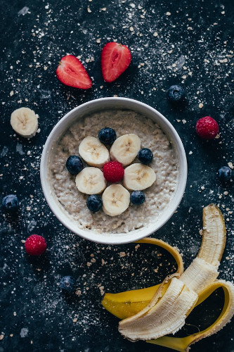

Oatmeal*

photo source *bananas, strawberries, and raspberries not included
Description
This recipe for oatmeal is the perfect morning meal to fuel an active day!
Ingredients
- 1/2 cup rolled oats
- 1 medium orange (peeled, cut slices into smaller chunks)
- 1/4 cup frozen blueberries
- 1 spoonfull peanut butter
- 1 dollop honey
- optional: pinch of salt
Steps
- Get medium saucepot, serving bowl large enough to hold 1 cup oatmeal (oats will double in size once cooked), and spoon
- Place 1 cup water in saucepot
- If desired, throw pinch of salt in saucepot
- Place saucepot on stove on high heat, cover, and bring to a boil
- When water reaches a boil, pour in rolled oats, stir, and turn stove down to 50%-60% heat
- Turning down the heat wards off the froth monster, who will otherwise cause your oatmeal to boil over the sides of the saucepot and make a horrible mess.
- Stir occasionally until almost all of the water has been absorbed by oats (ie, all water would be cooked off within next 30 seconds)
- Turn off heat. Stir in spoonfull of peanut butter until dissolved into cooked oats.
- Into saucepot add:
- Orange chunks
- dollop of honey
- Frozen blueberries
- Stir the happy mixture together, pour into serving bowl, eat and enjoy!
Home